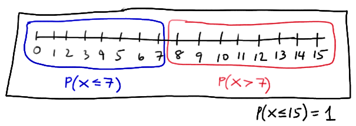
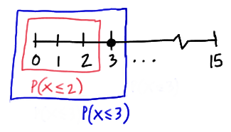
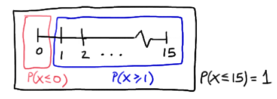
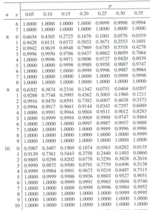

Cumulative Binomial Probabilities
Example
By some estimates, twenty-percent (20%) of Americans have no health insurance. Randomly sample n = 15 Americans. Let X denote the number in the sample with no health insurance. What is the probability that exactly 3 of the 15 sampled have no health insurance?
Solution. Since n = 15 is small relative to the population of N = 300,000,000 Americans, and all of the other criteria pass muster (two possible outcomes, independent trials, ....), the random variable X can be assumed to follow a binomial distribution with n = 15 and p = 0.20. Using the probability mass function for a binomial random variable, the calculation is then relatively straightforward:
\(P(X=3)=\dbinom{15}{3}(0.20)^3 (0.80)^{12}=0.25\)
That is, there is a 25% chance, in sampling 15 random Americans, that we would find exactly 3 that had no health insurance.
What is the probability that at most one of the sample has no health insurance?
Solution. "At most one" means either 0 or 1 of those sampled have no health insurance. That is, we need to find:
P(X ≤ 1) = P ( X = 0) + P(X = 1)
Using the probability mass function for a binomial random variable with n = 15 and p = 0.20, we have:
\(P(X \leq 1)=\dbinom{15}{0}(0.2)^0 (0.8)^{15}+ \dbinom{15}{1}(0.2)^1(0.8)^{14}=0.0352+0.1319=0.167\)
That is, we have a 16.7% chance, in sampling 15 random Americans, that we would find at most one that had no health insurance.
What is the probability that more than seven have no health insurance?
Solution. Solution. Yikes! "More than seven" in the sample means 8, 9, 10, 11, 12, 13, 14, 15. As the following picture ilustrates, there are two ways that we can calculate P ( X > 7):

We could calculate P(X > 7) by adding up P(X = 8), P(X = 9), up to P(X = 15). Alternatively, we could calculate P(X > 7) by finding P(X ≤ 7) and subtracting it from 1. But to find P(X ≤ 7), we'd still have to add up P(X = 0), P(X = 1), up to P(X = 7). Either way, it becomes readily apparent that answering this question is going to involve more work than the previous two questions. It would clearly be helpful if we had an alternative to using the binomial p.m.f. to calculate binomial probabilities. The alternative typically used involves cumulative binomial probabilities.
An Aside On Cumulative Probability Distributions
|
Definition. The function: F(x) = P(X ≤ x) is called a cumulative probability distribution. For a discrete random variable X, the cumulative probability distribution F(x) is determined by: \(F(x)=\sum\limits_{m=0}^x f(m)=f(0)+f(1)+\cdots+f(x)\)
|
You'll first want to note that the probability mass function, f(x), of a discrete random variable X is distinguished from the cumulative probability distribution, F(x), of a discrete random variable X by the use of a lowercase f and an uppercase F. That is, the notation f(3) means P(X = 3), while the notation F(3) means P(X ≤ 3).
Now the standard procedure is to report probabilities for a particular distribution as cumulative probabilities, whether in statistical software such as Minitab, a TI-80-something calculator, or in a table like Table II in the back of your textbook. If you take a look at the table, you'll see that it goes on for five pages. Let's just take a look at the top of the first page of the table in order to get a feel for how the table works:
In summary, to use the table in the back of your textbook, as well as that found in the back of most probability textbooks, to find cumulative binomial probabilities, do the following:
- Find n, the number in the sample, in the first column on the left.
- Find the column containing p, the probability of success.
- Find the x in the second column on the left for which you want to find F(x) = P(X ≤ x).
Let's try it out on our health insurance example.
Example
Again, by some estimates, twenty-percent (20%) of Americans have no health insurance. Randomly sample n = 15 Americans. Let X denote the number in the sample with no health insurance. Use the cumulative binomial probability table in the back of your book to find the probability that at most 1 of the 15 sampled has no health insurance.
Solution. The probability that at most 1 has no health insurance can be written as P(X ≤ 1). To find P(X ≤ 1) using the binomial table, we:
- Find n = 15 in the first column on the left.
- Find the column containing p = 0.20.
- Find the 1 in the second column on the left, since we want to find F(1) = P(X ≤ 1).
What is the probability that more than 7 have no health insurance?
Solution. As we determined previously, we can calculate P(X > 7) by finding P(X ≤ 7) and subtracting it from 1:
The good news is that the cumulative binomial probability table makes it easy to determine P(X ≤ 7). To find P(X ≤ 7) using the binomial table, we:
- Find n = 15 in the first column on the left.
- Find the column containing p = 0.20.
- Find the 7 in the second column on the left, since we want to find F(7) = P(X ≤ 7).
Now, all we need to do is read the probability value where the p = 0.20 column and the (n = 15, x = 7) row intersect. What do you get?
{kind=link}
The cumulative binomial probability table tells us that P(X ≤ 7) = 0.9958. Therefore:
P(X > 7) = 1 − 0.9958 = 0.0042
That is, the probability that more than 7 in a random sample of 15 would have no health insurance is 0.0042.
What is the probability that exactly 3 have no health insurance?
Solution. We can calculate P(X = 3) by finding P(X ≤ 2) and subtracting it from P(X ≤ 3), as illustrated here:

To find P(X ≤ 2) and P(X ≤ 3) using the binomial table, we:
- Find n = 15 in the first column on the left.
- Find the column containing p = 0.20.
- Find the 3 in the second column on the left, since we want to find F(3) = P(X ≤ 3). And, find the 2 in the second column on the left, since we want to find F(2) = P(X ≤ 2).
Now, all we need to do is (1) read the probability value where the p = 0.20 column and the (n = 15, x = 3) row intersect, and (2) read the probability value where the p = 0.20 column and the (n = 15, x = 2) row intersect. What do you get?
{kind=link}
The cumulative binomial probability table tells us that finding P(X ≤ 3) = 0.6482 and P(X ≤ 2) = 0.3980. Therefore:
P(X = 3) = P(X ≤ 3) − P(X ≤ 2) = 0.6482 − 0.3980 = 0.2502
That is, there is about a 25% chance that exactly 3 people in a random sample of 15 would have no health insurance. Again, for kicks, since it wouldn't take a lot of work in this case, you might want to verify that you'd get the same answer using the binomial p.m.f.
What is the probability that at least 1 has no health insurance?
Solution. We can calculate P(X ≥ 1) by finding P(X ≤ 0) and subtracting it from 1, as illustrated here:

To find P(X ≤ 0) using the binomial table, we:
- Find n = 15 in the first column on the left.
- Find the column containing p = 0.20.
- Find the 0 in the second column on the left, since we want to find F(0) = P(X ≤ 0).
Now, all we need to do is read the probability value where the p = 0.20 column and the (n = 15, x = 0) row intersect. What do you get?
{kind=link}
The cumulative binomial probability table tells us that P(X ≤ 0) = 0.0352. Therefore:
P(X ≥ 1) = 1 − 0.0352 = 0.9648
That is, the probability that at least one person in a random sample of 15 would have no health insurance is 0.9648.
What is the probability that fewer than 5 have no health insurance?
Solution. "Fewer than 5" means 0, 1, 2, 3, or 4. That is, P(X < 5) = P(X ≤ 4), and P(X ≤ 4) can be readily found using the cumulative binomial table. To find P(X ≤ 4), we:
- Find n = 15 in the first column on the left.
- Find the column containing p = 0.20.
- Find the 4 in the second column on the left, since we want to find F(4) = P(X ≤ 4).
Now, all we need to do is read the probability value where the p = 0.20 column and the (n = 15, x = 4) row intersect. What do you get?
{kind=link}
The cumulative binomial probability table tells us that P(X ≤ 4) = 0.8358. That is, the probability that fewer than 5 people in a random sample of 15 would have no health insurance is 0.8358.
We have now taken a look at an example involving all of the possible scenarios... at most x, more than x, exactly x, at least x, and fewer than x... of the kinds of binomial probabilities that you might need to find. Oops! Have you noticed that p, the probability of success, in the binomial table in the back of the book only goes up to 0.50. What happens if your p equals 0.60 or 0.70? All you need to do in that case is turn the problem on its head! For example, suppose you have n = 10 and p = 0.60, and you are looking for the probability of at most 3 successes. Just change the definition of a success into a failure, and vice versa! That is, finding the probability of at most 3 successes is equivalent to 7 or more failures with the probability of a failure being 0.40. Shall we make this more concrete by looking at a specific example?
 Example
Example
Many utility companies promote energy conservation by offering discount rates to consumers who keep their energy usage below certain established subsidy standards. A recent EPA report notes that 70% of the island residents of Puerto Rico have reduced their electricity usage sufficiently to qualify for discounted rates. If ten residential subscribers are randomly selected from San Juan, Puerto Rico, what is the probability that at least four qualify for the favorable rates?
Solution. If we let X denote the number of subscribers who qualify for favorable rates, then X is a binomial random variable with n = 10 and p = 0.70. And, if we let Y denote the number of subscribers who don't qualify for favorable rates, then Y, which equals 10 − X, is a binomial random variable with n = 10 and q = 1 − p = 0.30. We are interested in finding P(X ≥ 4). We can't use the cumulative binomial tables, because they only go up to p = 0.50. The good news is that we can rewrite P(X ≥ 4) as a probability statement in terms of Y:
P(X ≥ 4) = P(−X ≤ −4) = P(10 − X ≤ 10 − 4) = P(Y ≤ 6)
Now it's just a matter of looking up the probability in the right place on our cumulative binomial table. To find P(Y ≤ 6), we:
- Find n = 10 in the first column on the left.
- Find the column containing p = 0.30.
- Find the 6 in the second column on the left, since we want to find F(6) = P(Y ≤ 6).
Now, all we need to do is read the probability value where the p = 0.30 column and the (n = 10, y = 6) row intersect. What do you get?

{kind=link}
The cumulative binomial probability table tells us that P(Y ≤ 6) = P(X ≥ 4) = 0.9894. That is, the probability that at least four people in a random sample of ten would qualify for favorable rates is 0.9894.
If you are in need of calculating binomial probabilities for more specific probabilities of success (p), such as 0.37 or 0.61, you can use statistical software, such as Minitab, to determine the cumulative binomial probabilities. You can then still use the methods illustrated here on this page to find the specific probabilities (more than x, fewer than x, ...) that you need.